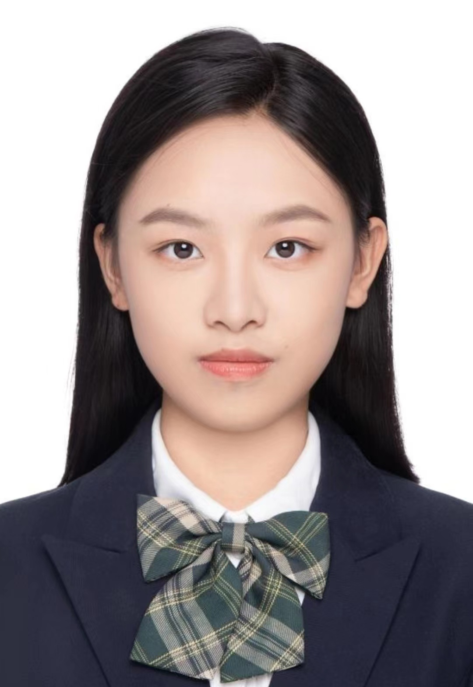

个人简历
Personal Resume
何佳悦
联系电话：15397181638
电子邮箱：jiayuehe0104@gmail.com
出生年月：2005年1月

教育背景
新南威尔士大学（UNSW）
| 传媒专业 - 本科
2025.02 至今
主修课程：
屏幕制作、电影研究、市场营销、公共关系学、广告学等。
南京传媒学院
| 广播电视编导专业 - 本科
2023.09 至 2025.01
主修课程：
广播电视导论、摄影与摄像、画面编辑、新闻采访与写作、艺术概论等。
实习经历
淘宝天下传媒有限公司
| 营销策划实习生
2025.12 - 2026.02
负责前期创意脑暴构思、营销策划方案撰写，根据业务需求优化策划案，完成项目筹备与方案定稿工作；
参与千问、天猫年货节等多个项目全流程落地执行，其中天猫年货节项目获传播侧全网曝光
61.7亿
，微博高位主榜文娱
50个
；
独立担任“美的”支付宝集五福项目经理，把控红书侧传播节奏，统筹品牌业务与达人商务双向对接，同步沟通需求、审核达人种草内容并跟进修改落地；
负责结项后项目整体数据整理、营销亮点及问题复盘总结，为后续同类项目策划提供数据参考。
杭州文化广播电视集团
| 影视频道实习生
2024.02 - 2024.03
参与《星光之约》节目的前期策划，包括选题调研与拍摄脚本撰写；
撰写每周浙江星光影视公众号原创文稿，及内容编辑与排版；
杭州生活频道民生类节目外出采访，协助拍摄与现场沟通。
项目经历
第五届全国中医药传承创新发展大会
| 新媒体运营
2024.07 - 2024.12
协助撰写大会招商合作方案初稿，参与项目前期材料准备与逻辑梳理；
负责大会宣传视频与素材的拍摄与剪辑工作，参与微信视频号、抖音等运营，最终达成
30 个
抖音账号，
7500 条
视频，
三千万
播放总量的宣传效果。
个人技能
语言能力：
大学英语四/六级，雅思6.5，普通话二级甲等
软件工具：
计算机二级，熟练Office系列，熟悉ChatGPT、Gemini、Deepseek等AI模型
专业技能：
擅长图像/视频拍摄，精通Ps、Pr、An、剪映等后期软件
个人评价
具备扎实的新媒体内容运营实践经验，熟悉主流平台内容策划、编辑与发布流程；
实习期间多次参与大型 activity 项目宣传，具备良好的项目执行力与团队协作意识；
对内容传播有浓厚兴趣，学习能力强，能快速适应媒体运营领域的节奏。